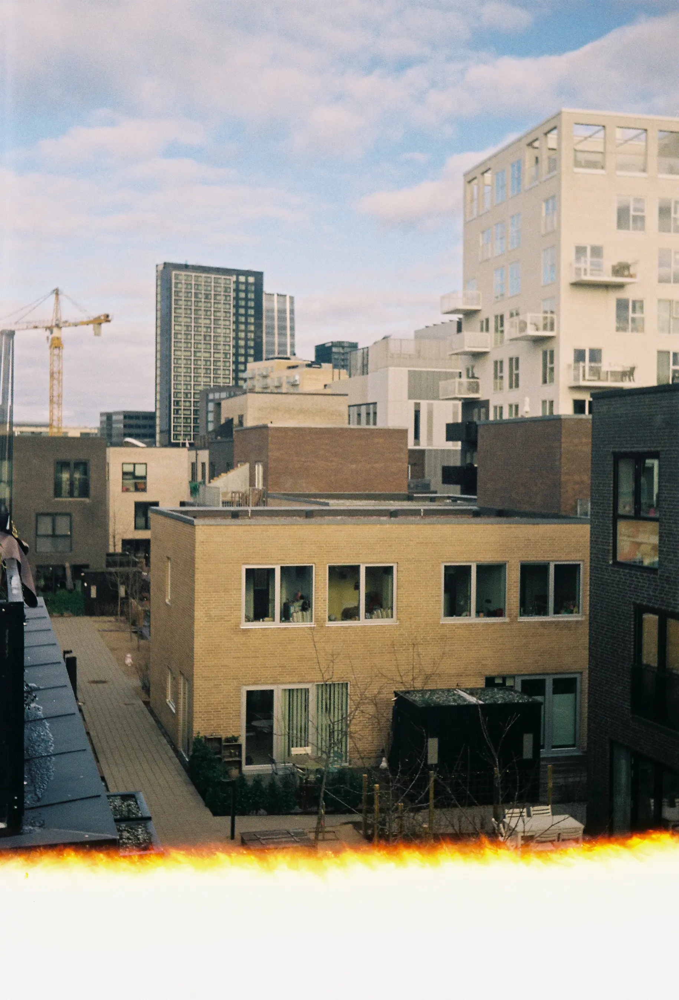

- Pierre sælger 2 millioner fotos om året.
- Det svarer til én fotolicens hvert 16. sekund.
- Du ser hans fotos ca. 2 gange om dagen.
Fra Kunstig
til
Kunstner.
En kort fortælling om fotografen Pierre Falcke
Pierre Falcke.
Du ved formentligt ikke hvem han er.
Men indtil for kort tid siden, så du hans værker et par gange om dagen, hver dag, året rundt.
Pierre Falcke var en af verdens bedst sælgende stock-fotografer.
Men Pierre kunne ikke drømme om at bruge sine egne fotos.
Faktisk kan han ikke fordrage sit eget arbejde...
Hvad er stock-fotos?
Stock-fotos er billeder, der kan købes fra et foto-website. De bruges af aviser, til markedsføring og som indhold på websites. En licens til at bruge et foto koster typisk mellem 10 og 100 kroner, alt afhængig af hvad de skal bruges til.
Stock-fotos bliver ofte kritiseret for at være uden sjæl - det er de der billeder af en læge i hvid kittel med stetoskop om halsen på en meget hvid baggrund eller en meget glad dame fra virksomhedens salgs- eller supportafdeling.
Stock-fotos har eksisteret i mange år. Før branchen blev digital, tilbød stock-foto virksomhederne billedmapper, der kunne bestilles fra. Men stock-foto branchen var én af de tidlige til at blive fuldt digitaliseret.

Pierres berømmelse
Pierres interesse for foto startede som ganske ung - som 10-årig fik han sin fars gamle Rollei-kamera, og begyndte at skyde løs. Det var før den digitale revolution, så alle Pierres lommepenge blev brugt på filmruller og fremkaldelse af film. Pierre fortsatte med at fotografere på film op gennem gymnasietiden.
Pierre over til digital fotografering i starten af 2000’erne, da han begyndte at studere fotografisk kommunikation på DMJX. Her åbnede en ny verden sig: Reklamefotografering i studie, lyssætning og manipulering af billeder i Photoshop blev hans nye stil.
" Om ganske få år er hele branchen digital, og dem der ikke hopper med på den digitale vogn, lukker.
Så Pierre gav sig selv en udfordring: At blive landets bedst sælgende stock-fotograf. Pierre lejede et gammelt, billigt erhvervslokale i Ishøj industri, fik fløjet billige skuespillere ind fra Polen og Baltikum, og fotograferede 10 timer om dagen.
Pierres profeti om stock-foto branchen holdt stik. Pierre var allerede en af landets bedst sælgende stock-fotografer, før han blev færdig med studiet på DMJX.
-
En Skillevej
Pierre tjente godt det følgende årti. Men stille og roligt begyndte billederne også at give ham kvalme.
-
Han kunne ikke holde sit eget arbejde ud, og måtte finde et modsvar til alle de blankpolerede fotos. Noget han kunne lave med stolthed.
Pierre bestluttede sig for at droppe stock-fotos, og vende tilbage til rødderne. -
Han søgte inspiration i analog fotografering, i Lomo-bevægelsen, Glitch art og polaroid fotografering, og begyndte stille og roligt at skabe sig en ny stil - en stil med fokus på det uperfekte, og hvor der er et uforudsigeligt element i det at tage billeder.


-
Pierre tog det endda så vidt at han ikke kun droppede at tage stock-fotos. Han fjernede også alle stock-fotos fra de tjenester, han solgte sine fotos hos.
Han gik fra at være en god forretningsdrivende til at blive en vaskeægte boheme-type på rekordtid.
En ny begyndelse
Men Pierre er glad for sin beslutning
Indkomsten er lavere nu, men han har stadig lidt penge på kontoen, og studerer nu kunstfotografering på fotoskolen Fatamorgana. Han glæder sig over hver dags kunstneriske eksperimenter, og er for første gang i sit liv rigtig stolt af sit arbejde.

Det interessante ligger i fejlen. Et foto med masser af fejl er interessant. Jeg eksperimenterer med udstyr og teknik, og skaber nye visuelle udtryk. Det uperfekte er perfekt.
Karrieren begynder også så småt at gå den rette vej:
Pierre er begyndt at sælge fotokunst på nettet, og har udgivet sin første foto-bog med titlen “Lidt i fem,” som er en fotografisk odyssé om at slæbe en brandert hjem i de tidlige morgentimer. I forbindelse med udgivelsen af bogen, har han en udstilling på vej i det Kongelige Biblioteks fotoudstilling.


Som Pierre forklarer det:
Nu kan jeg leve livet igen. Jeg føler mig frisk. Jeg føler mig fri. Jeg føler mig genfødt.
Udforsk Pierres værker og træd ind i hans nyfundne kreative univers:
Bestil bogen "Lidt i Fem" i dag og lad dig inspirere af Pierres fotostil.